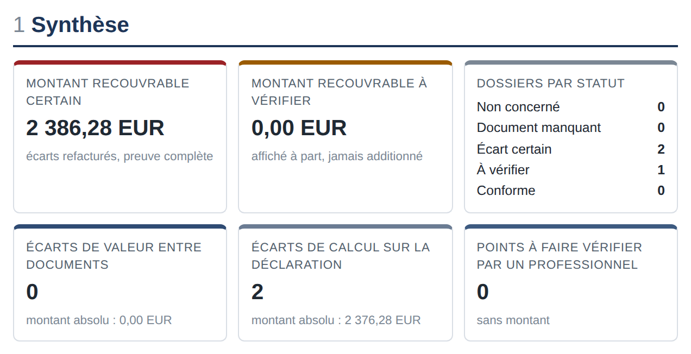

Vos factures de transitaire disent‑elles la même chose que vos déclarations en douane ?
ControlDOne rapproche, dossier par dossier, la facture commerciale, la déclaration en douane, la facture du transitaire et ses avoirs. Chaque écart est chiffré et cité avec sa preuve. Vous recevez des demandes d'avoir prêtes, que vous envoyez vous-même.
- Pour les PME qui importent via un transitaire, sans service douane
- Calcul fait par du code testé, preuve page par page
- Aucun conseil juridique ni douanier : les sujets réglementaires sont renvoyés à un professionnel
Tolérance appliquée : 0,05 EUR. Le constat porte sur la différence entre les deux documents ; il ne se prononce pas sur l'applicabilité de l'autoliquidation.
Quatre documents, trois émetteurs, personne pour les rapprocher
Pour chaque envoi importé, une PME reçoit la facture de son fournisseur, la déclaration déposée par le déclarant, la facture du transitaire, parfois un avoir. Les droits, la TVA à l'importation et les frais refacturés sont rarement rapprochés ligne à ligne : les formats diffèrent, et sans service douane, personne n'a le temps de le faire.
TVA refacturée malgré l'autoliquidation
La facture du transitaire refacture une TVA à l'importation que la déclaration indique comme autoliquidée.
Prestations au-dessus du devis
Frais de dédouanement, d'avance de fonds ou lignes supplémentaires facturés au-delà de la grille tarifaire que vous avez acceptée.
Débours différents du montant liquidé
Droits ou taxes refacturés pour un montant supérieur à celui qui figure sur la déclaration.
Doublons et avoirs manquants
Même déclaration refacturée deux fois, même prestation facturée sur deux factures, avoir annoncé mais jamais imputé.
Ces exemples décrivent des types de contrôles réalisés, pas une fréquence observée.
Chaque dossier d'import, document contre document
PDF natifs, scans, exports XML ou CSV de déclaration, factures électroniques Factur-X, UBL ou CII, tableurs : les documents sont lus, regroupés par dossier, puis comparés.
Facture commerciale
Le document de référence : valeur, devise, quantités, masses, colis, Incoterm.
Déclaration en douane
Données H1 ou H7 : montants liquidés, base × taux imprimés, mode de paiement de la TVA.
Facture du transitaire
Débours refacturés contre la déclaration ; prestations contre votre grille ou votre devis.
Avoirs
Rattachement à la facture d'origine, imputation sur les écarts ouverts, suivi des écarts restant ouverts.
Un rapport vérifiable, et des demandes d'avoir prêtes
- Un rapport de diagnostic en ligne, en PDF et en tableur.
- Pour chaque écart : les deux valeurs côte à côte, avec le document, la page et le texte lu, le calcul et la tolérance appliquée.
- Deux montants séparés : écarts certains et écarts à vérifier, jamais additionnés.
- Des demandes d'avoir rédigées à votre nom, que vous relisez, modifiez et envoyez vous-même à votre transitaire.
- La liste des points à faire vérifier par un professionnel, sans montant.
- Avec l'abonnement : contrôle de chaque nouveau dossier et suivi des avoirs reçus.

Un audit technique, pas un conseil
ControlDOne constate des écarts factuels et contractuels entre documents. Il ne dit jamais si un droit, une taxe, un classement tarifaire, une origine ou une valeur en douane est juste au regard de la réglementation.
- Pas de conseil juridique, fiscal ou douanier.
- Pas d'avis sur le classement tarifaire, l'origine, la préférence, la valeur en douane, un taux ou un régime.
- Aucune démarche auprès de la douane.
- Aucune demande envoyée à votre transitaire à votre place : vous restez l'expéditeur.
- Pas une plateforme agréée de facturation électronique.
Quand un écart touche un sujet réglementaire, le rapport le signale à part, sans montant, avec toujours la même phrase :
« Ce point relève d'une appréciation réglementaire : il est à faire vérifier par un représentant en douane enregistré ou un avocat. ControlDOne ne se prononce pas sur ce point. »
Un représentant en douane enregistré (RDE) ou un avocat peut alors examiner le point.
Quatre étapes
Vous déposez
Un lot de dossiers passés, dans un espace sécurisé ou par une adresse dédiée : PDF, scans, exports, factures électroniques, votre grille tarifaire.
Le code compare
Lecture, regroupement par dossier, puis contrôles déterministes. Les tolérances appliquées sont affichées.
Le fondateur valide
Chaque constat et chaque demande d'avoir est relu par une personne avant de vous être remis.
Vous envoyez, nous suivons
Vous envoyez les demandes d'avoir. Les avoirs reçus sont rapprochés des écarts ; la commission ne porte que sur ce qui est obtenu.
Plus de règles, plus de lignes sur les factures
Quelques échéances publiques qui ajoutent des montants et des mentions à rapprocher. ControlDOne ne traite pas ces obligations à votre place ; il compare ce que disent vos documents.
Droit de douane forfaitaire sur les envois de faible valeur (jusqu'à 150 EUR), du 1er juillet 2026 au 1er juillet 2028. L'article se détermine par le classement tarifaire, pas par la quantité.
Source : règlement (UE) 2026/382 ; Commission européenne, DG TAXUD.
Réception des factures électroniques obligatoire pour toutes les entreprises assujetties, via une plateforme agréée. Émission obligatoire pour les PME au plus tard le 1er septembre 2027.
Source : impots.gouv.fr.
Première déclaration annuelle MACF (CBAM), pour l'année 2026, pour les importateurs concernés. ControlDOne ne prépare pas cette déclaration.
Source : règlement (UE) 2025/2083 ; calendrier publié par l'autorité allemande compétente, DEHSt.
Date annoncée d'application de l'essentiel du nouveau code des douanes de l'Union, adopté en septembre 2026 et applicable par étapes jusqu'en 2034.
Source : KPMG ; Commission européenne.
Combien d'erreurs sur les factures de transitaires ? Aucune mesure indépendante n'existe à notre connaissance. Le diagnostic sert justement à mesurer votre propre situation, sur vos propres dossiers.
Trois diagnostics offerts
Les trois premières entreprises qui le souhaitent reçoivent un diagnostic complet sans frais. En échange, elles acceptent que les résultats soient publiés sous forme anonymisée : ni votre nom, ni celui de vos transitaires, ni vos numéros de documents n'apparaissent.
Conditions précisées par écrit avant le démarrage. La commission sur les avoirs obtenus reste due dans les conditions des CGV [À VALIDER].
Ce que comprend le diagnostic
- Analyse d'un lot de dossiers passés
- Rapport en ligne, PDF et tableur
- Demandes d'avoir prêtes à envoyer